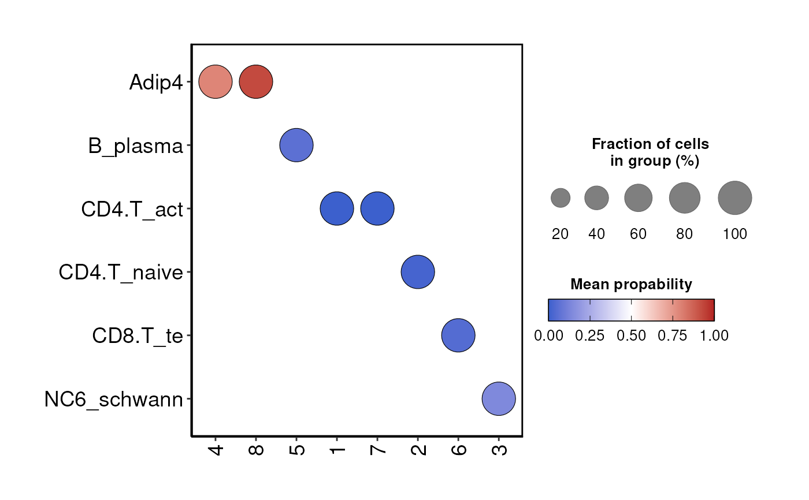

Runs the CellTypist model on a Seurat or SCE object to predict cell type labels, storing the results as metadata. If the number of cells is less than the specified threshold, it returns NAs for the labels. Optionally updates the CellTypist models and returns the probability matrix. Useful for annotating cell types in single-cell RNA sequencing datasets.
Usage
DO.CellTypist(
sce_object,
modelName = "Healthy_Adult_Heart.pkl",
minCellsToRun = 200,
runCelltypistUpdate = TRUE,
over_clustering = "seurat_clusters",
assay_normalized = "RNA",
returnProb = FALSE,
SeuV5 = TRUE
)Arguments
- sce_object
The seurat or sce object
- modelName
Specify the model you want to use for celltypist
- minCellsToRun
If the input seurat or SCE object has fewer than this many cells, NAs will be added for all expected columns and celltypist will not be run.
- runCelltypistUpdate
If true, –update-models will be run for celltypist prior to scoring cells.
- over_clustering
Column in metadata in object with clustering assignments for cells, default seurat_clusters
- assay_normalized
Assay with log1p normalized expressions
- returnProb
will additionally return the probability matrix, return will give a list with the first element beeing the object and second prob matrix
- SeuV5
Specify if the Seurat object is made with Seuratv5
Examples
sce_data <- readRDS(system.file("extdata", "sce_data.rds", package = "DOtools"))
sce_data <- DO.CellTypist(
sce_object = sce_data,
modelName = "Healthy_Adult_Heart.pkl",
runCelltypistUpdate = TRUE,
over_clustering = "seurat_clusters",
minCellsToRun=5,
SeuV5=TRUE
)
#> 2025-07-26 09:20:45 - Running celltypist using model: Healthy_Adult_Heart.pkl
#> 2025-07-26 09:20:45 - Saving celltypist results to temporary folder: /tmp/RtmpRFk4Uy/file1b37235fea7f0
#> 2025-07-26 09:21:06 - Running Celltypist
#> 2025-07-26 09:21:08 - Creating probality plot
